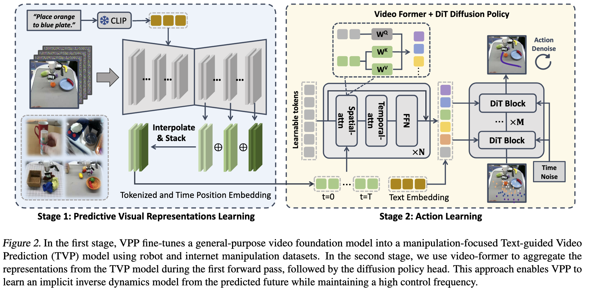

[Paper Note] Video Prediction Policy: A Generalist Robot Policy with Predictive Visual Representations
Video Prediction Policy: A Generalist Robot Policy with Predictive Visual Representations
We hypothesize that video diffusion models can capture dynamic information and better predict the future physical world. This capability could provide valuable guidance for robot action learning.
Video Prediction Policy
For generalist policies, the visual module is crucial.
Our approach is divided into two steps:
- Step 1: Fine-tune a general-purpose video diffusion model. This model is fine-tuned using internet human and robot manipulation data. The primary goal here is to enhance manipulation skills.
- Step 2: Learn an inverse dynamics model. This model is conditioned on the predictive representations from the previous step. This means we only use the internal states of the first model, not its direct output, thus avoiding the need for multi-step diffusion.
- Ego4d: Around the world in 3,000 hours of egocentric video
- Spatialvlm: Endowing vision-language models with spatial reasoning capabilities
- Learning universal policies via text-guided video generation
- Unleashing large-scale video generative pre-training for visual robot manipulation
Limitations of Existing Approaches:
- Some methods that utilize future information rely solely on a single future prediction step to determine actions. This approach may not accurately capture the complexities of physical dynamics.
- Denoising the final future image can be time-consuming and lead to a low control frequency, which is undesirable for real-time robotic control.
- The prediction quality of auto-regressive models often lags behind that of diffusion-based methods.
Insights from Diffusion Models:
- Image Diffusion Models for Visual Representations: Recent work indicates that image diffusion models can learn meaningful visual representations.
- Denoising diffusion autoencoders are unified self-supervised learners.
- Diffusion Models for Semantic Segmentation: Diffusion models have also been shown to be effective for semantic segmentation tasks.
- Diffusion hyperfeatures: Searching through time and space for semantic correspondence.
Text-guided Video Prediction Model for Robot Manipulation
While video generation models are trained on large-scale datasets, they are not fully controllable and often fail to produce optimal results in specialized domains like robot manipulation.
Our base model is Stable Video Diffusion (SVD).
- The original SVD model is only conditioned on initial-frame images.
- We augment this model to incorporate CLIP language embeddings using cross-attention layers, allowing for text-guided control.
- The output video resolution is 16 frames of 256x256 pixels.
Action Learning Conditioned on Predictive Visual Representation

Our key insight is that even the first forward step of the diffusion process, while not producing a clear video, still provides a rough trajectory of future states and valuable guidance for action learning.
We found that the up-sampling layers in U-Net diffusion models yield more effective representations.
We concatenate the feature maps from these later layers after interpolating them to the same width and height.
To further extract information, we use a Transformer (specifically, a “Video Former”) to generate T x L tokens. This Transformer is conditioned on the concatenated feature maps. These feature maps can originate from multiple camera views, but they are treated as distinct inputs rather than being merged into a single feature map.
Finally, this information, along with the CLIP embeddings from natural language descriptions, conditions our diffusion policy model.
Experiments
We evaluated our approach using two standard benchmarks:
- CALVIN benchmark: This benchmark assesses the instruction-following capabilities of robotic policies in long-horizon manipulation tasks. We used the ABC->D setting, meaning the agent is trained in environments A, B, and C, and then evaluated in the unseen environment D.
- MetaWorld Benchmark
We adopted the dataset sampling strategy from Octo, an open-source generalist robot policy, given the varying scales and quality of the datasets used in this work.
Computational cost:
- Fine-tuning the video model required 2-3 days on eight NVIDIA A100 GPUs.
- The second stage, training a generalist policy with the CALVIN or MetaWorld dataset, took approximately 6-12 hours on four NVIDIA A100 GPUs.
Since we use the video diffusion model solely as an encoder, we can achieve a control frequency of 7-10 Hz on an RTX 4090.
Ablation Study
We conducted several ablation studies to understand the contribution of different components:
-
Comparison with VAE as Encoder:
- VAEs are primarily trained for reconstruction.
- Using a video generation model as an encoder significantly outperforms a VAE.
-
Importance of Internet Data and Pre-trained Models:
-
Both internet manipulation data and pre-trained video diffusion models are crucial for achieving good performance.
-
Impact of Video Former:
- The Video Former significantly reduces latency and improves overall performance.
-
Feature Map Aggregation:
- Using only the final layer’s feature map resulted in poorer performance.
- The image from the final layer often contains many irrelevant details that are not beneficial for the task.
- In contrast, we adopted a feature aggregation mechanism to leverage multiple layers of features within the up-sampling layers, which proved more effective.